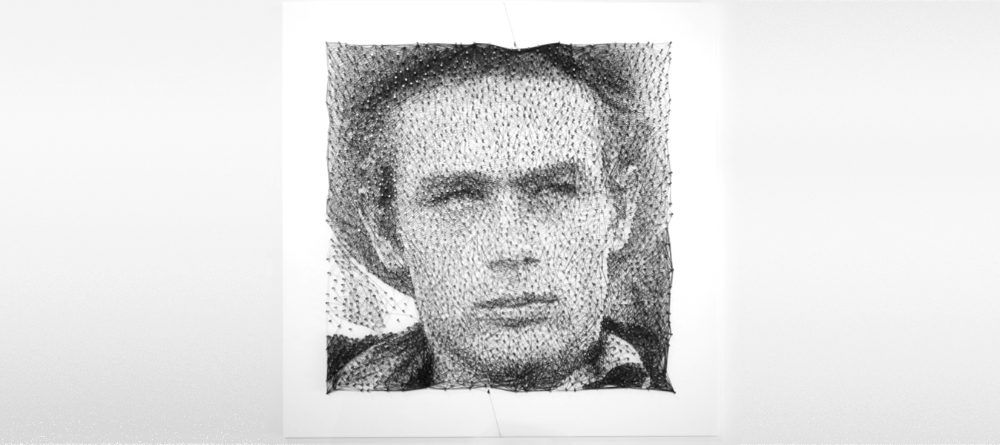
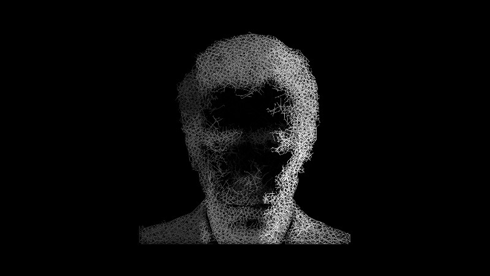
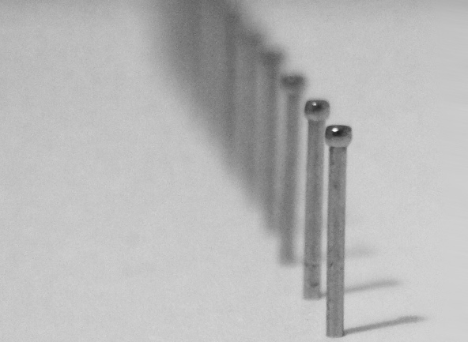

> Project Llull
This machine produces an image using nails and a single thread. Almost all pieces are 40cmx40cm (16"x16”) and are made with between 2000 and 3000 nails and 500m of thread.
Nails are placed one by one in about six hours and threading is finished in around ten.


The algorithm uses multiple-criteria decision analysis to make the resulting work as similar to the original image as possible. Nails are placed using corner and edge detection algorithms and voronoi diagrams to fill empty areas in a natural and pleasing way.
Placing thread without collisions is achieved with a combination of hardware and software. Every segment is placed at a specific height.



The machine is similar to a 3d-printer or a CNC machine and uses a Raspberry Pi to run the software. It has evolved a lot since the first iteration four years ago which took weeks and a lot of manual labour to complete a job.




Contact: laarco.things@gmail.com
Copyright Laarco & Things 2015, London, UK.